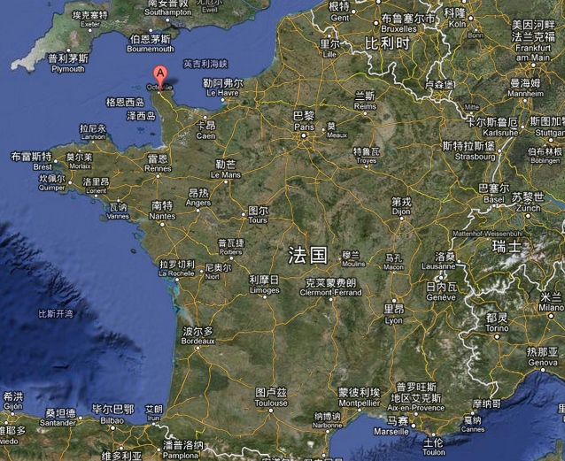

ubuntu已经出到了13.04, 我之所以坚持使用ubuntu10.04的版本(到现在已经三年了, 现在10.04已经过了支持周期而我还在继续用它), 主要是因为ubuntu出的unity界面以及gnome3的界面实在是用起来不爽(吐槽不已!!)...
目前我的lucid(ubuntu 10.04)经过我的配置, 在我 …
ubuntu已经出到了13.04, 我之所以坚持使用ubuntu10.04的版本(到现在已经三年了, 现在10.04已经过了支持周期而我还在继续用它), 主要是因为ubuntu出的unity界面以及gnome3的界面实在是用起来不爽(吐槽不已!!)...
目前我的lucid(ubuntu 10.04)经过我的配置, 在我 …
X机房的电脑配置还是很高的, 所以...
远程登录的命令是: ssh -X nom.prenom@truite.polytechnique.fr
(-X命令表示允许使用X程序.)
登录进去以后, 可以在终端里输入命令, 比如查 …
眼看三月又要结束了, blog还没有更新, 拿来以前写在zim里的一条笔记充数...
有了zim以后, 几乎不再用office了, 常用它编辑一些富文本, 比如加粗, 下划线, 斜体什么的, 有快 …
passé simple 其实一点也不simple... 在Cherbourg时老师直接就没讲, 一是因为这个时态的变位很复杂; 二是现在这个时态几乎不用了, 除了出现在童话故事或人物 …

任何一种环境或一个人, 初次见面就预感到离别的隐痛时, 你必定爱上他了.
我是在来Cherbourg的第二天突然想起这句话的.
那天是29-09-2012, 在德先生和赛先生的带 …
上个月读的这本书, 后来简单写了点东西(其实主要是摘抄啦...). 圣诞来到住家, blog很久没更新了, 放上来充数...
嗯, 这本书不错, 心乱的时候读一 …
前一阵遇到的三个小功能, linux下有简单的命令可以实现...
这个在网上搜一般找到的结果是:
convert *.jpg xx.pdf
但是这么做的问题是, 运行起 …
赶在十月最后一天发一篇水文...
每年X新生的国际学生中会有一些人来到Cherbourg的Ecole des Fourriers学习四个月的法语. 这四个月的时间也许是X四年里最轻松的一段时间了吧......
今年有19名学生来Cherbourg, 历史最多. 我们每两 …
这个总结早就应该写了, 拖延到今天实在惭愧...... 赶在今年申请的同学还没笔试之前把它写出来吧...
来到X之后, 上外网全部要用代理的, 非常不爽... 而且ubuntu的所谓的全局代理设置(首选项-->网络代理)好像并不管用... 设置了之后apt-get命令可以用, 但是常用软件(最常用莫过 …